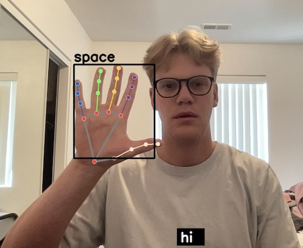

Projects
Sign Language Detection System
The hand detection model I developed utilizes a Random Forest Classifier to accurately recognize and interpret all the letters of the alphabet as signed by users. This advanced system is designed to detect hand gestures and convert them into written text in real time, enabling seamless communication for individuals who use sign language. The potential applications of this model are vast and impactful. It can be integrated into video call platforms to facilitate real-time sign language interpretation, making virtual communication more inclusive. Additionally, this system can serve as an educational tool, helping students learn sign language through interactive and engaging methods. Furthermore, it bridges the communication gap between sign language users and those unfamiliar with it, fostering greater understanding and interaction in diverse settings. Add Github link
- Python
- Machine Learning
- Data Preprocessing
- Computer Vision
Youth Engineering Photo Web Application
Collaborating with a team of two other computer science students, we successfully met the predefined requirements to develop a web application for the SUU Youth Engineering Academy. This application enables teachers to take photos of students and scan the QR code on their badges, automatically associating each photo with the correct student. The photos are then sent to the camp director for verification. Once verified, the director emails the photos to the respective parents, who were linked to the photo when the camper's ID badge was scanned.Add Github link
- Project Management
- Django
- Github
- Web Development
- Database Management
Education
Southern Utah University Fall 2021 - Present
GPA 3.874
My journey into the world of Computer Science started at SUU. After a suprising change from Kineseology, I found that the aspects of problem solving and technology peaked my interest. Throughout my academnic career I have had the opportunity to take many classes and learn about varios aspects that make up Computer Science. Some of my favorite subjects have included Data Structures and Algorithms, Website Development, Database Design and Management, and Machine Learning. Data Structures and Algorithms provided me with a strong foundation in efficient data organization and manipulation. In the Database Design and Management class I was able to delve into the principles of designing, implementng and managing databases. In Machine Learning I was able to explore the facinating realm of artificial intelligence and which algorithms and techniques are used to form and create predictions based off of data.
Utah State University Spring 2020 - Spring 2021
After a two year educational break to serve a religious mission in Argentina, I continued my higher education at Utah State University, initially pursuing a degree in kinesiology with the aim of becoming a physical therapist. During my studies, I gained a deeper understanding of the human body and its functions, which fueled my passion for learning and scientific inquiry. This background provided me with a strong foundation in analytical thinking, problem-solving, and data analysis. As I delved into the intricacies of kinesiology, I discovered a growing interest in technology and its potential to enhance our understanding of complex systems. This led me to transition into computer science, where I could apply my analytical skills and scientific mindset to solve technical challenges. My unique perspective, rooted in both the life sciences and technology, enables me to approach technological problems with a innovative mindset.
Westminster University Fall 2017
During my time at Wesminster University I had the opportunity to be part of Division II soccer program. This experience was instrumental in shaping my character and work-ethic. As a student-athlete I learned the importance of hard work, perseverance, and teamwork. Being part of the soccer team taught me how to balance rigorous training schedules with academic responsibilities, honing my time management and organizational skills. The discipline required to excel both on the field and in the classroom has prepared me to tackle challenges with resilience and efficiency. This experience not only refined my ability to work hard but also underscored the value of balancing multiple important tasks simultaneously, a skill that is invaluable in both professional and personal contexts.
Experience
Casino Game Maker May 2023 - Present
Math Simulations - As a software developer at CGM, I developed a suite of C# programs to rigorously test and validate mathematical models created by outside mathematicians. These simulations ensured that the mathematical frameworks aligned perfectly with our intended gameplay mechanics. By implementing these tests early in the development process, we significantly reduced the overall development time, allowing for concurrent testing and development, and minimizing the need for post-development adjustments.
Game Development - I contributed to the development of multiple games, utilizing both the Haxe language and Unity with C# scripting. My responsibilities spanned across various stages of the development process, including drafting white pages, coding, debugging, and preparing submission packages. By handling these critical tasks, I enabled senior software engineers to focus on more complex and demanding aspects of the projects.